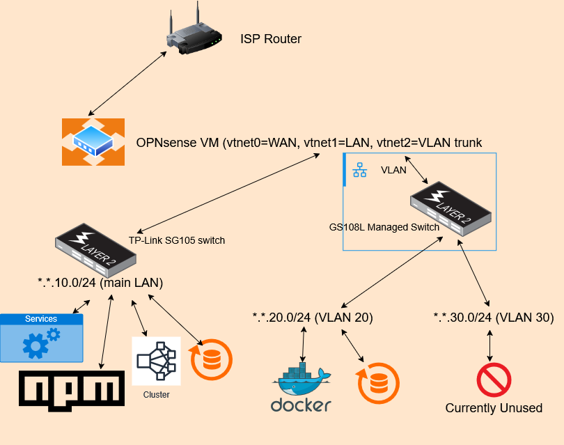
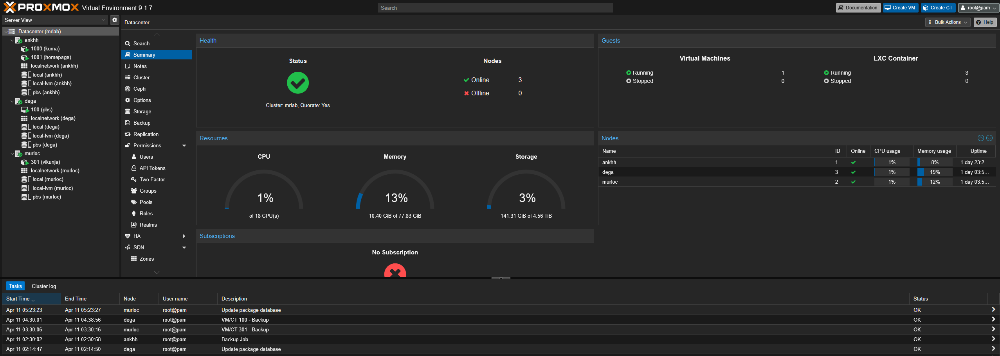
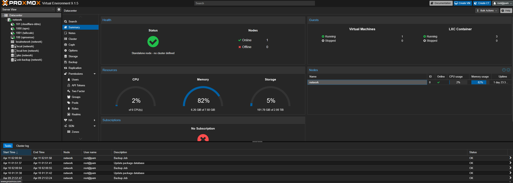
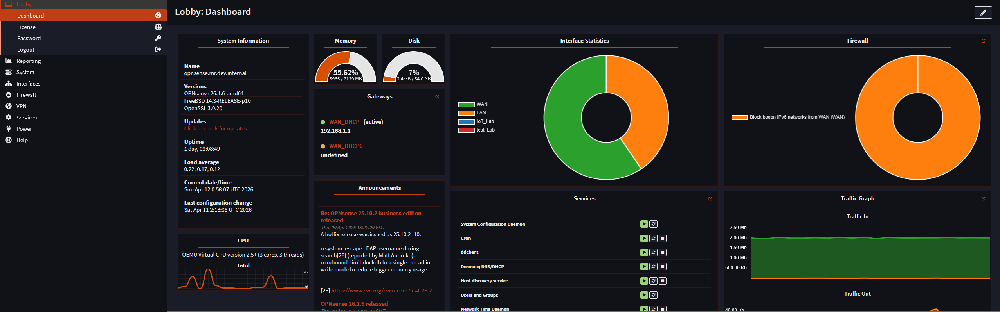
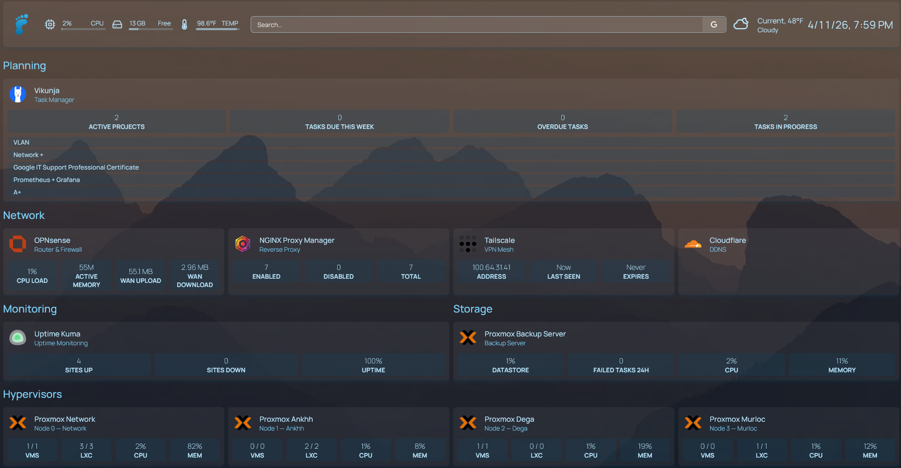
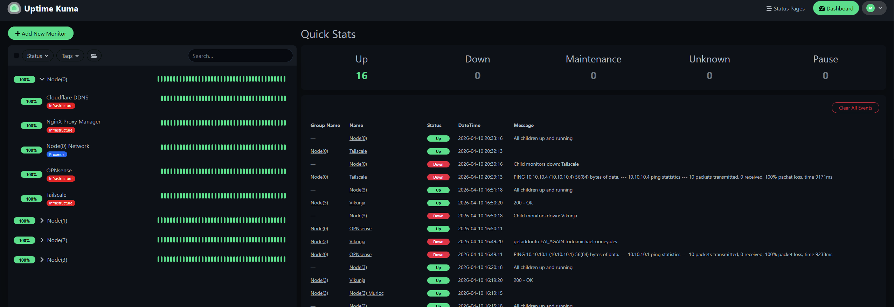
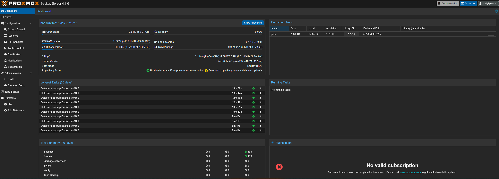
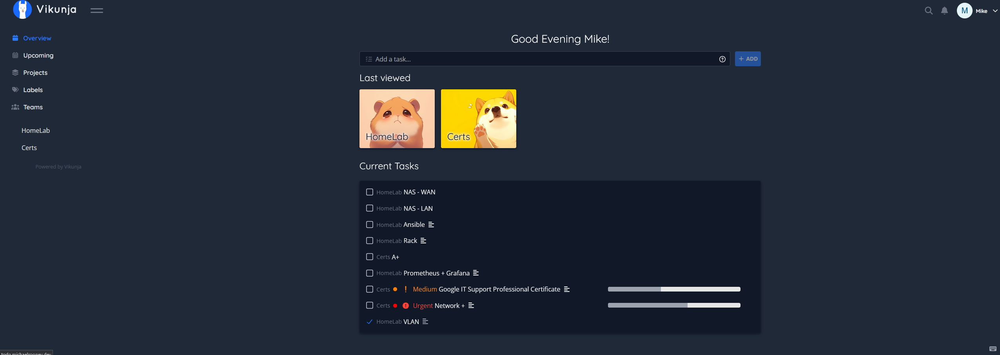
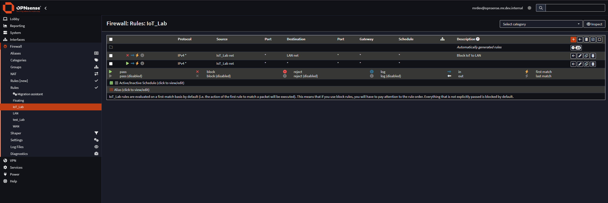
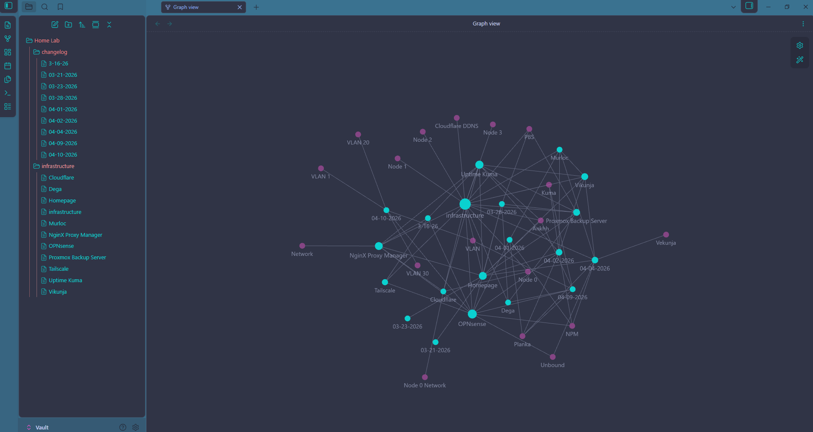

A Tour of the Homelab
This is a visual walkthrough of the homelab I've been building and documenting over the past several months. It started as a way to gain hands-on experience with infrastructure concepts while transitioning into a tech career. It's grown into something I'm genuinely proud of — a functional, monitored, documented stack running on four repurposed mini PCs.
Every service here was deployed, configured, broken, fixed, and documented by hand. The journal entries linked throughout this site tell that story in detail. This page is the visual overview.
Network Architecture
Four Lenovo ThinkCentre M920Q mini PCs running Proxmox Virtualization Environment. One standalone node handles all network services. Three form a cluster for workloads and storage. A managed switch extends the network with VLAN segmentation for traffic isolation.

Proxmox Cluster
Three of the four nodes form a Proxmox VE cluster — Ankhh (32GB RAM, primary workload node), Dega (32GB RAM, backup and storage), and Murloc (16GB RAM, productivity services). The fourth node runs standalone handling network infrastructure exclusively.


OPNsense — Router and Firewall
OPNsense runs as a VM on the network node with direct NIC passthrough. It handles routing, firewall rules, DHCP, and local DNS resolution via Unbound. All inter-VLAN traffic is routed and filtered here — devices on the isolated VLAN can reach the internet but are blocked from the main network by explicit firewall rules.

Homepage Dashboard
Homepage provides a single pane of glass for the entire infrastructure. Live stats pull directly from Proxmox nodes via API tokens — VM counts, CPU usage, memory usage per node. Network services, monitoring tools, backup status, and productivity apps are all accessible from one place. Configured entirely via YAML files, no database required.

Uptime Kuma — Monitoring
Uptime Kuma monitors every service in the stack with configurable intervals and Gmail SMTP alerts. Monitors are organized by node group and tagged by role — infrastructure, services, and Proxmox nodes. When something goes down an email arrives within a minute.

Proxmox Backup Server
Proxmox Backup Server runs as a VM on Dega with a dedicated 1.8TB datastore on a fast NVMe. All four nodes back up nightly at 2am with deduplication enabled — the entire cluster's backup footprint is a fraction of what traditional snapshots would require. Retention policy keeps three recent, seven daily, and four weekly backups automatically.

Vikunja — Task Management
Vikunja keeps the work organized — homelab projects, certification study milestones, career goals, and coursework deadlines all in one place. A native Homepage widget surfaces active tasks, overdue items, and upcoming deadlines directly on the dashboard without opening a separate app.

VLAN Segmentation
A managed switch extends the network with VLAN support. The trunk port carries tagged traffic for multiple VLANs to OPNsense which handles inter-VLAN routing and firewall enforcement. Devices on isolated VLANs get internet access but cannot reach the main infrastructure network — enforced at the firewall layer, not just the switch layer.

Documentation — Obsidian
Every service, every configuration decision, every problem and its resolution lives in an Obsidian vault alongside the infrastructure it describes. Obsidian stores everything as plain markdown files — no proprietary format, no cloud dependency, no subscription. The entire knowledge base is a folder of text files that can be committed to version control, searched instantly, and read on any device.
The vault is organized around services and events. Each service has its own note with access details, hosting location, configuration gotchas, and related notes linked by name. A changelog note tracks every meaningful change to the infrastructure by date — what changed, why, and what it broke or fixed. The linking system means searching for any service surfaces every note that references it, which turns out to be more useful than any folder structure.
The discipline of writing things down before the session ends has compounded noticeably. Problems that would have required re-diagnosing from scratch get resolved in minutes because the original diagnosis is documented. Configuration decisions that seemed obvious at the time make sense months later because the reasoning is written down. The documentation isn't just record-keeping — it's part of how the infrastructure stays maintainable by one person working in spare hours.

What's next
The roadmap includes Ansible for configuration management across all nodes, Prometheus and Grafana for metrics and temperature monitoring, a dedicated NAS for media storage and backup redundancy, and additional VLAN segments as the network grows. The infrastructure investments compound — each piece makes the next one easier to build and maintain.